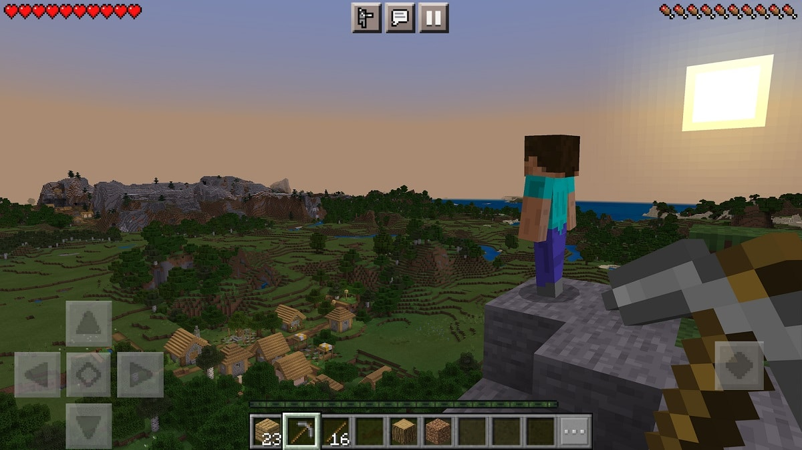
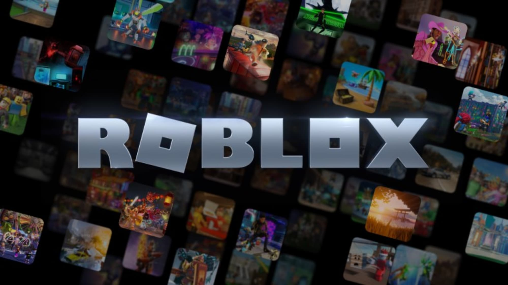

Minecraft“ yra internetinis vaizdo žaidimas, kuriame iš blokelių galima statyti ir kurti savo pasaulius arba tyrinėti kitų sukurtus. „Minecraft“ sukurtas 2011 metais, šiuo metu priklauso „Microsoft“. Minimalus žaidėjų amžius yra 7 metai.
„Roblox“ yra internetinė platforma, skirta žaisti ir kurti žaidimus. Didžioji dauguma „Roblox“ platformoje paskelbtų žaidimų yra sukurti pačių vartotojų, todėl žaidimai yra patys įvairiausi ir skirtingų tipų – nuo picų išvežiojimo, karalystės užkariavimo ar dalyvavimo madų šou.
